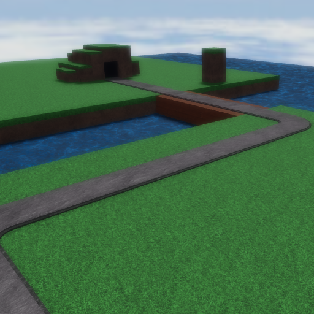

|  | |
| Length | 153 Studs (Medium) |
|---|---|
| Cliffs | 5 |
| Date Added | December 31th, 2022 |
| Built By | coreyhsGames |
Grasslands is a medium/short island map with a few cliffs. This map is actually based off a old removed map from Tower Battles, Grasslands.
Grasslands takes an appreance of multiple islands. There is a bridge between two islands. The path/track is stone.